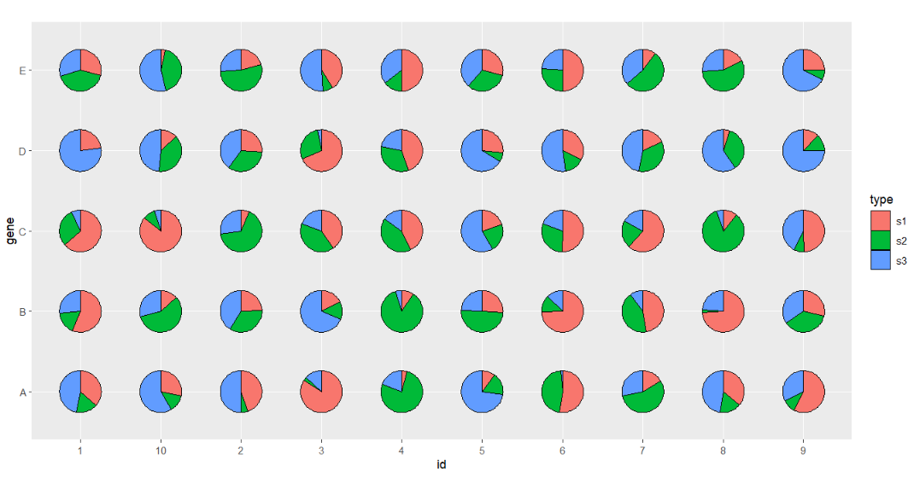

Chapter 9 geom_jjPointPie
9.1 Introduction
To better display the relative ratio of different element in multiple groups, here supply a jjPointPie geom function to draw multiple pies in graph in a convenient way.
9.2 Installation
Re-install it to gain new features:
install.packages('devtools')
devtools::install_github('junjunlab/jjPlot')9.3 Prepare data
library(ggplot2)
library(jjPlot)
# prepare test
set.seed(123)
test <- data.frame(gene = rep(LETTERS[1:5],each = 10),
id = rep(as.character(1:10),5),
group = 1:50,
r = rep(c(0.4,0.8,1.2,1,1.6),each = 10),
s1 = abs(rnorm(50,sd = 10)),
s2 = abs(rnorm(50,sd = 10)),
s3 = abs(rnorm(50,sd = 10)))
# check
head(test,3)
# gene id group r s1 s2 s3
# 1 A 1 1 0.4 5.604756 2.5331851 7.104066
# 2 A 2 2 0.4 2.301775 0.2854676 2.568837
# 3 A 3 3 0.4 15.587083 0.4287046 2.466919
# widte to long
df.long <- reshape2::melt(test,id.vars = c('gene','id','group','r'),
variable.name = 'type',value.name = 'per')
# check
head(df.long,3)
# gene id group r type per
# 1 A 1 1 0.4 s1 5.604756
# 2 A 2 2 0.4 s1 2.301775
# 3 A 3 3 0.4 s1 15.5870839.4 Examples
Defalut plot, you should define the group, the relative ratio will be calculated automaticlly:
# default
ggplot(df.long,aes(x = id,y = gene,group = group)) +
geom_jjPointPie(aes(pievar = per)) +
coord_fixed()Mapping with type:
# mapping with type
ggplot(df.long,aes(x = id,y = gene,group = group)) +
geom_jjPointPie(aes(pievar = per,
fill = type)) +
coord_fixed()
We can add a circle on it:
# add circle
ggplot(df.long,aes(x = id,y = gene,group = group)) +
geom_jjPointPie(aes(pievar = per,
fill = type),
add.circle = TRUE,
circle.radius = 0.07) +
coord_fixed()Or make a hollow circle pie:
# make hollow circle
ggplot(df.long,aes(x = id,y = gene,group = group)) +
geom_jjPointPie(aes(pievar = per,
fill = type),
add.circle = TRUE,
circle.rev = TRUE,
circle.radius = 0.03,
circle.fill = 'grey90') +
coord_fixed()You can also specify a group name to be seprated from the pie:
# seprate part of pie
ggplot(df.long,aes(x = id,y = gene,group = group)) +
geom_jjPointPie(aes(pievar = per,
fill = type,
filltype = type),
explode = "s1") +
coord_fixed()# seprate part of pie
ggplot(df.long,aes(x = id,y = gene,group = group)) +
geom_jjPointPie(aes(pievar = per,
fill = type,
filltype = type),
explode = "s3") +
coord_fixed()Seprate all parts which looks like chapped pie:
# seprate all
ggplot(df.long,aes(x = id,y = gene,group = group)) +
geom_jjPointPie(aes(pievar = per,
fill = type,
filltype = type,
explode = type)) +
coord_fixed()Ajust the distance:
# ajust dist
ggplot(df.long,aes(x = id,y = gene,group = group)) +
geom_jjPointPie(aes(pievar = per,
fill = type,
filltype = type),
explode = "s1",
explode.dist = 0.25) +
coord_fixed()Change filled color:
# change fill color
ggplot(df.long,aes(x = id,y = gene,group = group)) +
geom_jjPointPie(aes(pievar = per,
fill = type,
filltype = type),
explode = "s1",
explode.dist = 0.25) +
coord_fixed() +
ggsci::scale_fill_npg()Ajust width and color:
# ajust width and color
ggplot(df.long,aes(x = id,y = gene,group = group)) +
geom_jjPointPie(aes(pievar = per,
fill = type),
width = 1.5,
color = 'white',
line.size = 1) +
coord_fixed() +
theme_bw(base_size = 14) +
theme(panel.grid = element_blank()) +
ggsci::scale_fill_npg()Add rect background:
# add rect background
ggplot(df.long,aes(x = id,y = gene,group = group)) +
geom_jjPointPie(aes(pievar = per,
fill = type),
width = 1.5,
color = 'white',
line.size = 1) +
geom_tile(fill = NA,color = 'black') +
coord_fixed() +
theme_bw(base_size = 14) +
theme(panel.grid = element_blank()) +
ggsci::scale_fill_npg()Mapping with width:
# mapping with width
ggplot(df.long,aes(x = id,y = gene,group = group)) +
geom_jjPointPie(aes(pievar = per,
fill = type,
width = r),
color = 'white',
line.size = 1) +
geom_tile(fill = NA,color = 'black') +
coord_fixed() +
theme_bw(base_size = 14) +
theme(panel.grid = element_blank()) +
ggsci::scale_fill_npg()Add a legend?
# add legend
ggplot(df.long,aes(x = id,y = gene,group = group)) +
geom_jjPointPie(aes(pievar = per,
fill = type,
width = r),
color = 'white',
line.size = 1) +
geom_tile(fill = NA,color = 'black') +
coord_fixed() +
theme_bw(base_size = 14) +
theme(panel.grid = element_blank()) +
ggsci::scale_fill_npg() +
scatterpie::geom_scatterpie_legend(df.long$r/10,
x = 1,y = 5.8,n = 3)9.5 Annotation
We can add some annotations using jjAnno:
# =======================================================
library(jjAnno)
# add groups
df.long$id <- factor(df.long$id,levels = 1:10)
df.long$group2 <- case_when(df.long$id %in% as.character(1:2) ~ 'group 1',
df.long$id %in% as.character(3:4) ~ 'group 2',
df.long$id %in% as.character(5:6) ~ 'group 3',
df.long$id %in% as.character(7:8) ~ 'group 4',
df.long$id %in% as.character(9:10) ~ 'group 5')
# basic plot
p <-
ggplot(df.long,aes(x = id,y = gene,group = group)) +
geom_jjPointPie(aes(pievar = per,
fill = type),
width = 1.5,
color = 'white',
line.size = 1) +
geom_tile(fill = NA,color = 'black') +
coord_fixed(clip = 'off') +
theme_bw(base_size = 14) +
theme(panel.grid = element_blank()) +
ggsci::scale_fill_npg()
# add anno
annoSegment(object = p,
annoPos = 'top',
aesGroup = T,
aesGroName = 'group2',
yPosition = 5.8,
segWidth = 0.8,
alpha = 0.6,
addText = T,
textSize = 14)9.6 Add percent ratio
Add the percent ratio can exactlly show the real data. We can use add.text = TRUE to mark the ratio:
# prepare test
set.seed(124)
test <- data.frame(gene = rep(LETTERS[1:3],each = 5),
id = rep(as.character(1:5),3),
group = 1:15,
r = rep(c(0.4,0.8,1.2,1,1.6),each = 3),
s1 = abs(rnorm(15,sd = 10)),
s2 = abs(rnorm(15,sd = 10)),
s3 = abs(rnorm(15,sd = 10)))
# widte to long
df.long <- reshape2::melt(test,id.vars = c('gene','id','group','r'),
variable.name = 'type',value.name = 'per')
# add percent
ggplot(df.long,aes(x = id,y = gene,group = group)) +
geom_jjPointPie(aes(pievar = per,
fill = type),
width = 2,
alpha = 0.6,
add.text = T,
text.dist = 0.6) +
theme_bw(base_size = 14) +
theme(panel.grid = element_blank()) +
ggsci::scale_fill_d3() +
coord_fixed()You can change text size and angle:
# change text size and angle
ggplot(df.long,aes(x = id,y = gene,group = group)) +
geom_jjPointPie(aes(pievar = per,
fill = type),
width = 2,
add.text = T,
text.dist = 0.6,
text.size = 3.5,text.rot = 45) +
theme_bw(base_size = 14) +
theme(panel.grid = element_blank()) +
ggsci::scale_fill_d3() +
coord_fixed()Specify the digits to be retained:
# retain percent digit
ggplot(df.long,aes(x = id,y = gene,group = group)) +
geom_jjPointPie(aes(pievar = per,
fill = type),
width = 2,
add.text = T,
text.dist = 0.68,
text.size = 3.5,ratio.digit = 0) +
theme_bw(base_size = 14) +
theme(panel.grid = element_blank()) +
ggsci::scale_fill_d3() +
coord_fixed()You can also emphasize one part and add ratio label:
# seprate part of pie and add percent label
ggplot(df.long,aes(x = id,y = gene,group = group)) +
geom_jjPointPie(aes(pievar = per,
fill = type,
filltype = type),
width = 2,
add.text = T,
text.dist = 0.77,
text.size = 3.5,ratio.digit = 0,
explode = "s1",text.all = F) +
theme_bw(base_size = 14) +
theme(panel.grid = element_blank()) +
ggsci::scale_fill_d3() +
coord_fixed()